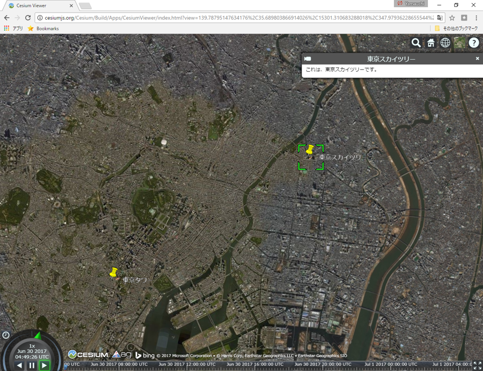
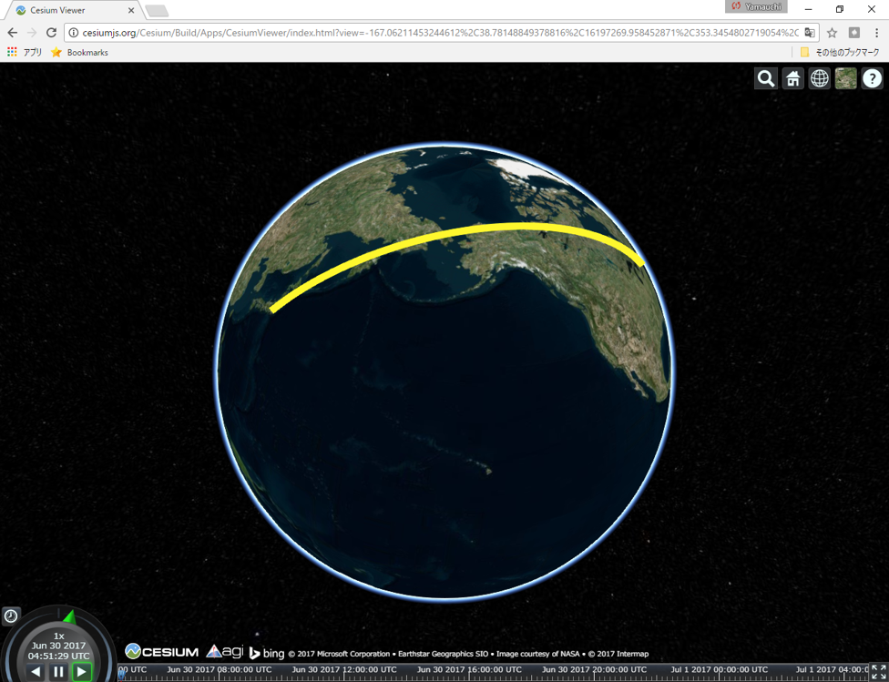
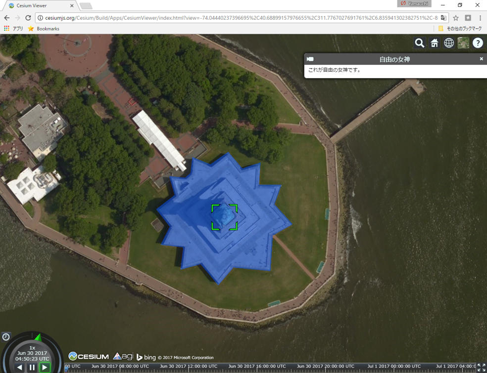

KML入門
以下では、主にGoogleEarthやCesiumで利用できるKMLデータ（点、線、面）の作成手法について解説します。GoogleEarhの基本的な操作法について、ある程度の理解のある方が対象になります。
本教材を使用する際は、利用規約をご確認いただき、これらの条件に同意された場合にのみご利用下さい。
Menu
KMLとは
KML(keyhole Markup language)は、3次元の地理空間情報を作成、表示する際に用いられます。GoogleEarth（旧名 Keyhole）などで、地理空間情報の多彩な表現が可能です。XMLで記述し作成されたファイルの拡張子は、.kmlとなります。また、ZIP形式で圧縮した.kmz(doc.kmlとそのファイルに関連するデータ)というファイルがあります。
ポイントの作成
以下は、東京スカイツリーと東京タワーのポイント作成したものです。以下のテキストを保存(テキストをコピーし.kmlで保存)しGoogle EarthやCesiumで表示するとデータを見ることができます。以下を参考にオリジナルのポイントデータを作成に挑戦してください。
<?xml version="1.0" encoding="UTF-8"?>
<kml xmlns="http://www.opengis.net/kml/2.2">
<!--↑の文をコピーして貼り付ける-->
<!--↓KMLを記述していく-->
<Document>
<name>東京スカイツリーと東京タワー</name> <!--データ名を記入-->
<open>1</open>
<StyleMap id="m_ylw-pushpin"><!--スタイルの指定先を記述-->
<Pair>
<key>normal</key><!--普段のスタイルの指定先を記述-->
<styleUrl>#s_ylw-pushpin</styleUrl>
</Pair>
<Pair>
<key>highlight</key><!--マウスオーバーしたときのスタイルの指定先を記述-->
<styleUrl>#s_ylw-pushpin_hl</styleUrl>
</Pair>
</StyleMap>
<Style id="s_ylw-pushpin_hl"><!--マウスオーバーしたときのアイコンのスタイルを記述-->
<IconStyle>
<scale>2</scale><!--アイコンの大きさ-->
<Icon><!--アイコンURLを指定 以下を変更すれば、オリジナルのアイコンになる-->
<href>http://maps.google.com/mapfiles/kml/pushpin/ylw-pushpin.png</href>
</Icon>
<hotSpot x="20" y="2" xunits="pixels" yunits="pixels"/><!--実際の地点とあうように位置をずらして表示-->
</IconStyle>
<LineStyle><!--アイコンにつなぐラインの色を指定-->
<color>ff7faaff</color><!--オレンジ系の色を指定-->
</LineStyle>
</Style>
<Style id="s_ylw-pushpin"><!--普段のアイコンのスタイルを記述-->
<IconStyle>
<scale>1.1</scale>
<Icon>
<href>http://maps.google.com/mapfiles/kml/pushpin/ylw-pushpin.png</href>
</Icon>
<hotSpot x="20" y="2" xunits="pixels" yunits="pixels"/>
</IconStyle>
<LineStyle>
<color>ff7faaff</color>
</LineStyle>
</Style>
<Placemark>
<name>東京スカイツリー</name><!--データの名前-->
<description>これは、東京スカイツリーです。</description><!--説明文(htmlで記述できる)-->
<LookAt>
<longitude>139.8105736546319</longitude><!--経度-->
<latitude>35.70869047827442</latitude><!--緯度-->
<altitude>0</altitude><!--標高-->
<heading>0</heading><!--機首方位、北が0°-->
<tilt>53.37</tilt><!--傾き-->
<range>2164.7</range><!--範囲-->
<gx:altitudeMode>relativeToSeaFloor</gx:altitudeMode><!--基準は海面とする-->
</LookAt>
<styleUrl>#m_ylw-pushpin</styleUrl>
<Point>
<extrude>1</extrude><!--ポイントの経緯度と標高を記述-->
<altitudeMode>relativeToGround</altitudeMode><!--地面を基準にアイコンを配置-->
<gx:drawOrder>1</gx:drawOrder>
<coordinates>139.8107252956902,35.71002945292051,634</coordinates>
</Point>
</Placemark>
<Placemark><!--一つのファイルに複数のPlace Markを作成する場合はこの下に記述-->
<name>東京タワー</name><!--データの名前-->
<description>これは、東京タワーです。</description>
<LookAt>
<longitude>139.745476</longitude><!--経度-->
<latitude>35.658537</latitude><!--緯度-->
<altitude>0</altitude><!--標高-->
<heading>0</heading><!--機首方位、北が0°-->
<tilt>53.37</tilt><!--傾き-->
<range>2164.7</range><!--範囲-->
<gx:altitudeMode>relativeToSeaFloor</gx:altitudeMode><!--基準は海面とする-->
</LookAt>
<styleUrl>#m_ylw-pushpin</styleUrl>
<Point>
<extrude>1</extrude><!--ポイントの経緯度と標高を記述-->
<altitudeMode>relativeToGround</altitudeMode><!--地面を基準にアイコンを配置-->
<gx:drawOrder>1</gx:drawOrder>
<coordinates>139.745476,35.658537,333</coordinates>
</Point>
</Placemark>
</Document>
</kml>
上記で作成したデータは以下のように表示できます。※ Cesium viewerにドラッグアンドドロップして表示。

ラインの作成
以下は、東京とニューヨークを結ぶラインを作成したものです。以下のテキストを保存(テキストをコピーし.kmlで保存)しGoogle EarthやCesiumで表示するとデータを見ることができます。以下を参考にオリジナルのラインデータを作成に挑戦してください。
<?xml version="1.0" encoding="UTF-8"?>
<kml xmlns="http://www.opengis.net/kml/2.2">
<Document>
<name>東京-NY</name>
<open>1</open>
<Style id="line">
<LineStyle><!--ラインのスタイルを指定-->
<color>ff2EF7FE</color><!--最初の2桁80(50%透過)で透過を指定し、後ろの16進数のカラーで2桁ずつでそれぞれRGB(BGRの順)を示す。-->
<width>10</width><!--ライン幅を指定-->
</LineStyle>
</Style>
<Placemark>
<name>tokyo-newyork</name>
<description>東京とニューヨークをつなぐ線です。</description>
<LookAt>
<longitude>-152.8348568845707</longitude>
<latitude>41.8452340473708</latitude>
<altitude>0</altitude>
<heading>10.89057864746075</heading>
<tilt>1.507082189563618</tilt>
<range>9465727.599999348</range>
<gx:altitudeMode>relativeToSeaFloor</gx:altitudeMode>
</LookAt>
<styleUrl>#line</styleUrl><!--lineのidを使ってスタイリング-->
<LineString><!--ラインを作成する。-->
<tessellate>1</tessellate>
<coordinates><!--ラインの頂点を作成する。-->
139.7321,35.7085,0<!--経緯度と標高-->
285.9941,40.7121,0
</coordinates>
</LineString>
</Placemark>
</Document>
</kml>
上記で作成したデータは以下のように表示できます。※ Cesium viewerにドラッグアンドドロップして表示。

ポリゴンのデータの作成
以下は、自由の女神周辺をトレースしポリゴンを作成したものです。以下のテキストを保存(テキストをコピーし.kmlで保存)しGoogle EarthやCesiumで表示するとデータを見ることができます。以下を参考にオリジナルのポリゴンデータを作成に挑戦してください。
<?xml version="1.0" encoding="UTF-8"?>
<kml xmlns="http://www.opengis.net/kml/2.2">
<Document>
<name>自由の女神</name>
<open>1</open>
<Style id="polygon">
<PolyStyle>
<color>7fff5500</color>
<outline>0</outline>
</PolyStyle>
</Style>
<Placemark>
<name>自由の女神</name>
<description>これが自由の女神です。</description>
<styleUrl>#polygon</styleUrl>
<Polygon><!--ポリゴンを作成-->
<tessellate>1</tessellate>
<altitudeMode>relativeToGround</altitudeMode>
<outerBoundaryIs>
<LinearRing>
<coordinates><!--ポリゴンの頂点を作成、経緯度標高の順で指定-->
-74.04499752154071,40.6892150948117,10 -74.04508902345016,40.68910500277669,10 -74.04490260924321,40.6890712241014,10 -74.0449452584661,40.68893225527901,10 -74.04477238706467,40.68895047011316,10 -74.04464566372177,40.68880536249563,10 -74.04450250063262,40.68890404524074,10 -74.04419793103934,40.68885309495814,10 -74.04413961652038,40.68907601900729,10 -74.04396055940559,40.68913292018742,10 -74.04409031001904,40.68927640684932,10 -74.04400857576606,40.68939908454744,10 -74.04420075240583,40.6894184734436,10 -74.04416169767181,40.68956379739579,10 -74.04432500067969,40.68953810849519,10 -74.0444281044832,40.68966015661734,10 -74.04459322088222,40.68959044901225,10 -74.04474235627428,40.68965401293135,10 -74.04477271590068,40.68955008337813,10 -74.04482177267657,40.68952193819843,10 -74.04495797510631,40.68954520507073,10 -74.0449279538866,40.68941648207719,10 -74.04509679444885,40.68933795131525,10 -74.04499752154071,40.6892150948117,10 <!--始点と同じ経緯度標高-->
</coordinates>
</LinearRing>
</outerBoundaryIs>
</Polygon>
</Placemark>
</Document>
</kml>
上記で作成したデータは以下のように表示できます。※ Cesium viewerにドラッグアンドドロップして表示。
